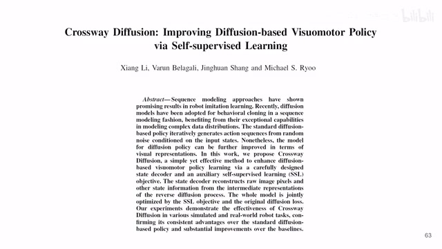
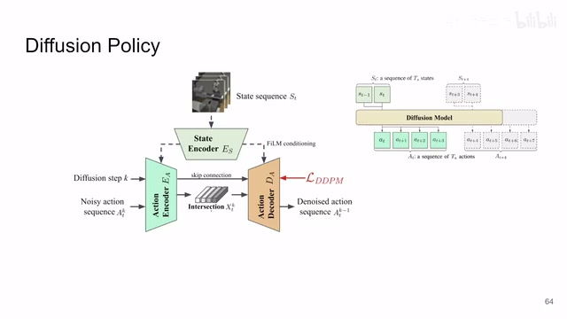
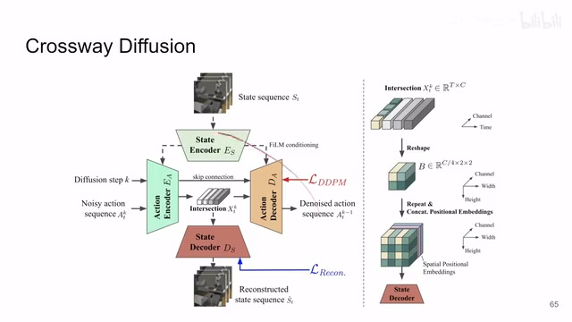
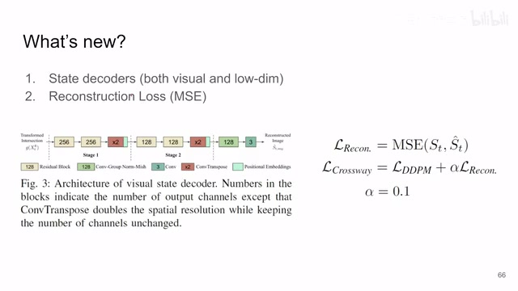
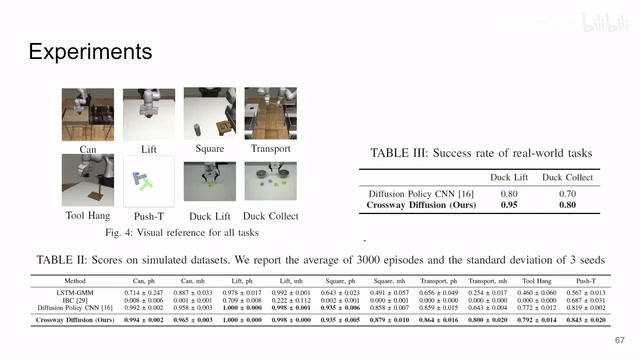
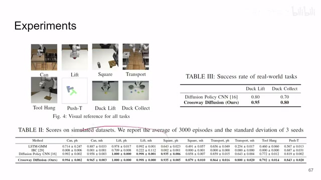
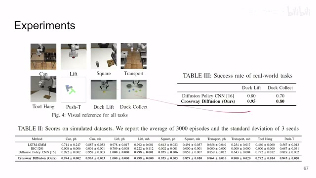
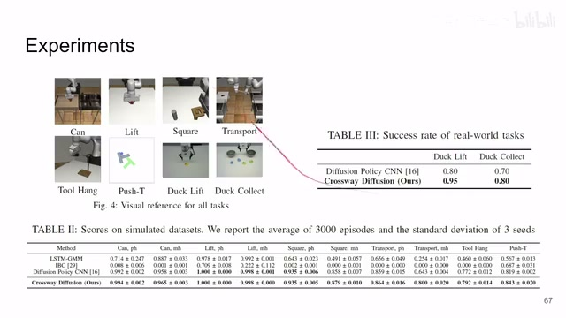
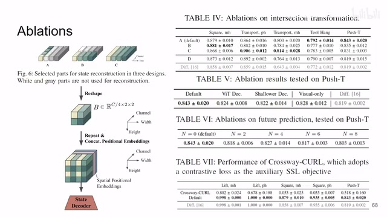

← 返回阅读库 · 原论文目录
论文讲解阅读文档 · 机器人学 · v101
Crossway Diffusion: Improving Diffusion-based Visuomotor Policy via Self-supervised Learning
视频时长 00:09:40；讲解文字 4,985 字符；提取讲解画面 19 张。按视频原顺序阅读，每段文字保留时间戳。
文字来自整段视频的自动语音转写，按自然停顿分段，并与 PPT / 论文页面 / 演示画面对齐。未将讲解压缩为摘要；术语、数字和口述公式请结合画面及原论文核对。 阅读稿已校正规范部分明确术语误识别；原始逐字稿和每处修改记录另行保留。
讲解画面为源视频截图（640×360），不是可编辑 PPT 文件。全片按每秒 2 帧扫描内容变化，逐步展开页保留；连续动画保留代表画面。清晰度受源视频限制。
下载完整资料包 · 含离线 HTML、PDF、Word、全部 PPT 画面和字幕。
原论文与材料
Crossway Diffusion: Improving Diffusion-based Visuomotor Policy via Self-supervised Learning · 下载完整 PDF（15 页）
按时间阅读
00:00:00–00:00:30 · 画面 001

00:00:00–00:00:30 · 画面 001大家好啊，今天我们来快速介绍一篇论文，Crossway DiffusionImproving Diffusion-Based Visual Motor Policy via Self-Supervised Learning。那这一篇呢，就是在之前我们介绍那个 Diffusion Policy 上的一个直接的改进，通过引入一个 Self-Supervised Learning 的一个辅助的任务。那具体来说呢，就是一个 Reconstruction 的任务，那来实现这个对来达成更好的 representation learning，来改善我们 behavior cloning 的性能。那这是这篇文章的核心。那首先一个快速的回顾这个 diffusion policy。那 diffusion policy 呢，是用 diffusion model 去生成一串 action sequence 做 behavior cloning。那么这个生成的过程呢，是 conditioned on 这些 state。那在它的 CNN 的版本里面，你一个 state sequence 送到 encoder 里面
00:00:30–00:01:12 · 画面 002

00:00:30–00:01:12 · 画面 002得到一个 feature，那么这个 feature 作为 condition 去影响你的这个 action sequence 的 denoising 的过程。那么你最后呢，就是从一个随机的噪声逐渐的 denoise，把最后的一个 action sequence 找出来。那么有了这个 action sequence 你就去执行嘛，执行完了之后你再收集新的 condition，再重新生成一个 action sequence。那这样子往复做下去就可以了。那么这个这个呢，是 diffusion policy
那么本文提出的核心呢，就是我在做这个 diffusion model 训练的时候，不是要从这个 action encoder 到 decoder 这是一个 U-Net 嘛，它本质上那么它中间有一个 representation，作者呢把这个 representation 拿出来，用这个 representation 送到一个 state decoder 里面。那这个 state decoder 把我们输入的这个 state 这个 condition 给它重建出来。那么这样子呢，就明确的确保了
00:01:12–00:03:12 · 画面 003
00:01:12–00:03:12 · 画面 003说你的加进来的这个 condition 的过程加到这个 diffusion 里面的这个过程。那它肯定包含了你的 observation 这个数据，使得你在生成这个 action 的时候呢，它不是无中生有的东西，它是确确实实的基于你的 state 来生成的。那这也是本文的一个核心的 intuition。那么你的重建的任务肯定有一个 loss 和你的 diffusion loss 一起做一个训练就好了。那么相当于这个重建的任务呢，就是一个辅助的任务帮助你去训练一个好的 representation。那么你看到为什么它叫 crossway，你有一条线是从这个 noisy 的 action 一直到这个 denoised action，你从横着过来
然后呢，你还有一条线，你是从原来的这个 input state 再到一个 reconstruction 的这个 state，这个竖着过来。那么他们两个在中间有一个 bottleneck，就是这个 intersection。你看两个信息流强制的被要求在这中间有一个 bottleneck。那么这样子限制了你的 diffusion 生成的过程，一定要基于你当前的 state，同时呢也有对更好的 representation learning 这样的一个期望那么当然你从这个 intersection 出来，它因为本来你的 action sequence 是一个一维的这个 tensor，这中间它并不是能够直接用的，而你的 state 呢有一些图像啊，有一些低维的信息，它们两个的形状是差别很大的。那么怎么处理这个问题呢，这里作者我们来看到它有一个这个 intersection transformation，在这里就是你看到首先这是那个 tensor 嘛，你看到这个横轴是它的这个时间的维度
这个方向是它的那个 channel 那注意呢，这里作者的操作是取了第一个时间维度上的 vector，然后呢把它拆成了四份，就是在这个 channel 尺度上拆成四份，那这四份给它排成这么一个小的 block。
00:03:12–00:04:33 · 画面 004
00:03:12–00:04:33 · 画面 004那么这个就是典型的 pixel shuffle，还是叫 unshuffle，我已经忘记了它的这个技巧了，就是来填你的 spatial dimension 差距比较大的情况下的这么一种技巧，也是很常用的技巧。那么有了这个小的 block 之后，它只不过是一个二乘二的 block 嘛，离你真正想要重建的图像的分辨率还差得很远。那这里呢，作者直接把这个东西横轴纵轴沿着复制复制成一个相对大一点的 block。
但是呢这里存在一个明显的问题就是对于 convolution 来说特别是你的这个 block 和这个 block 没区别对吧你如果直接拿它来用最后生成出来的图就是这个小的 block 的重复那么为了解决这个问题呢作者还加了一个叫 spatial positional embedding 就是 positional embedding 你在 transformer 里面见过你在 nerf 里面见过用它一串 cos 或者 sin 这个坐标。
来把这个空间中像素的每一个位置。给它标记好那这样子你最后输出来的图。它就不会是单调的重复。这个小的 block那么整个这样一个。加上 position encoding 的这样一个 tensor那最后呢送到这个 state decoder 里面。该重建重建就好了。那么这个呢就是本文新增加了 state decoder。
对于我们这个各种信息的处理。
00:04:33–00:04:34 · 画面 005
00:04:33–00:04:34 · 画面 005那最后 reconstruction 对吧
00:04:34–00:04:55 · 画面 006
00:04:34–00:04:55 · 画面 006你一个 loss 加进来state decoder 的 loss 训练那 t 度传递回来state encoder 也得到训练action encoder 也得到训练那么你这边的 diffusion loss t 度传回来action decoder 训练action encoder 训练和 state encoder 训练就相当于两个输入的网络。
它有两个头分开
00:04:55–00:04:57 · 画面 007
00:04:55–00:04:57 · 画面 007对吧一个十字路口这样一个结构。把所有的网络一起就都训练好了。
00:04:57–00:05:03 · 画面 008

00:04:57–00:05:03 · 画面 008那这个呢就是本文最核心的这个思路。比如说具体的 state decoder 实现。
00:05:03–00:05:48 · 画面 009

00:05:03–00:05:48 · 画面 009那这里呢作者用的是这个还是 resnet两个 residual block加一个 transpose convolutional做一个空间尺度上的生产样。那继续再重复最后两个这个 convolutional layer就结束了这是它的 state decoder注意呢这里呢针对比如说不同的相机来的图像。还有不同的机器人来的这些 state。
它是每一个这个信息的来源。都设置了一个专门 decode。就是每一个 Decoder 只负责自己一个 Sensor 这样子你训练起来压力会比较小那么当然 Reconstruction Loss 这里就直接用了 MSE 你最后 0.1 的比例和 DDPM Loss 加起来就是本文的 Loss 非常直接的一个实现
00:05:48–00:06:06 · 画面 010

00:05:48–00:06:06 · 画面 010我们直接来看作者汇报的结果，首先是各种任务都是 Diffusion Policy 里面的一些任务，然后作者加了两个真实的 Robot 实验，一个是把鸭子举起来，再就是把鸭子收到碗里，你看不同颜色的鸭子要进到不同的碗里，这是两个真实的任务。从数据上来看肯定像前面简单的任务大家其实改进的空间没有多少了，主要是最明显的是在 Transport MH 上原来的成功率比较低，现在都直接干到 0.8 左右了。
00:06:06–00:06:07 · 画面 011

00:06:06–00:06:07 · 画面 01100:06:07–00:06:24 · 画面 012
00:06:07–00:06:24 · 画面 012这个是非常明显的，但是像其他任务的提升相对就没有这么显眼了。那么这个是所有模拟任务的情况下，当然真实任务他们做了实验，你们说啥就是啥对吧。那么这个是它的主要的实验部分。那么当然其实我们更关心的还是 ablation 这块，这个其实还是挺有意思的就是最大的一个 ablation 就是我中间的 transformation 应该怎么设计，你可以看到这里这是原版的设计，只取了第一个时刻的 vector。
00:06:24–00:06:25 · 画面 013

00:06:24–00:06:25 · 画面 01300:06:25–00:06:29 · 画面 014
00:06:25–00:06:29 · 画面 01400:06:29–00:06:30 · 画面 015

00:06:29–00:06:30 · 画面 01500:06:30–00:06:32 · 画面 016
00:06:30–00:06:32 · 画面 01600:06:32–00:08:32 · 画面 017
00:06:32–00:08:32 · 画面 017然后切成四份做这个 block，那你当然也可以每个时刻都取一些 tensor 做成这个 block，或者是把这个整个 intersection 全都用起来做成这个 block，那得到这个效果。那这个是三种设计吗，你可以看到这三种设计呢。在各个任务里面都有不同的表现，特别是 TransportMHC 型的设计，它的性能甚至干到了 0.814。然后你看作者测的这五个环境里面到底选谁做默认的配置，最后作者说因为 A 配置它的做法最简单，我们就选这个配置。注意这里还有一个 DesignD，它就是 StateEncoder 出来的 Feature 直接扔到 StateDecoder 里面，就中间不经过 Intersection。
就相当于我的这个 reconstruction loss 只去训练这个 state encoder，我们看到在 push t 上面基本是没有提升的，而在其他的这些任务上呢还是有略微的一点改进的，说明我们只要使用好的这个 self-supervised learning 作为辅助的任务去更好的 visual representation 去学一个更好的 visual representation，那肯定还是有用的。
这是这一组 Ablation，那么再往下作者还测了不同的 Decoder 设计，比如说我们之前看到 Decoder 它是有两层放大的，如果我改成一层怎么样？如果我改成 Vision Transformer 怎么样？甚至我默认的情况下是重建所有 Visual input，所有 Low dimensional input，就是机械臂的那些关节那些数值等等，如果我只重建 Visual input 那情况会怎么样？这个 ablation 是做的这个方面的东西，那么当然这篇文章相对于 Diffusion Policy 的关系就像 SAC 加 AE 相对于 SAC 的关系。
就是加了一个 auto encoder那后面我们很自然的就会想到。我们是不是可以再用 CURL 这种东西？加 contrastive loss 来作为辅助的任务。我是不是可以用 future prediction
00:08:32–00:09:39 · 画面 018
00:08:32–00:09:39 · 画面 018这样的任务去做辅助的任务。来改善我们的 representation learning对吧甚至更为有甚者does self-supervised learning really improve reinforcement learning那你改一下does self-supervised learning really improve diffusion policy对吧是不是又可以水出一堆文章来呢？
这里作者直接断了你这个念头。我们来看首先这个是 future prediction不是预测当前的这个 observation。而是预测比如说两步之后。四步以后之后的这个 observation。那你可以看到它的效果并不是很好。甚至比原装的这个 diffusion policy 还要差。那这个念头就断掉了。那 CURL 这个更惨直接你看到这个性能。
直接全灭说明你给 diffusion policy挑这个辅助的任务的时候。还是需要有一点技巧的。那么当然这个文章的代码。也是直接改的 diffusion policy还有真机运行的实验的视频基本也就是这些内容了。那我们挑这篇文章。主要还是因为把 self-supervised learning这个东西引入到 diffusion model这个训练的过程中。
是一个我们之前没有见过的组合。好的那么以上呢就是我对这个文章的一个。非常快速的一个整理。那么感谢您的收看。
00:09:39–00:09:40 · 画面 019

00:09:39–00:09:40 · 画面 019转写与来源说明 · 19 个自动复核提示
保留 110 个原始语音片段，19 个片段触发自动复核提示。提示仅用于定位可能的术语、重复或识别问题，不等于已确认错误。
讲解画面为源视频截图（640×360），不是可编辑 PPT 文件。全片按每秒 2 帧扫描内容变化，逐步展开页保留；连续动画保留代表画面。清晰度受源视频限制。
原视频：paper/合集_2026-10-16_机器人学/[论文简析]Crossway Diffusion Improving Diffusion-based ... via SSL[2307.01849].mp4
SHA-256：cde3d3db99730eb10d11a778caf1fef92a8074c1f96191f7b422dc76b713c242
加上 position encoding 的这样一个 tensor
加一个 transpose convolutional
就是加了一个 auto encoder
那后面我们很自然的就会想到。
我们是不是可以再用 CURL 这种东西？
加 contrastive loss 来作为辅助的任务。
我是不是可以用 future prediction
这样的任务去做辅助的任务。
来改善我们的 representation learning
对吧
甚至更为有甚者
does self-supervised learning really improve reinforcement learning
那你改一下
does self-supervised learning really improve diffusion policy
对吧
是不是又可以水出一堆文章来呢？
这里作者直接断了你这个念头。
我们来看
也是直接改的 diffusion policy
全文按视频语音与画面制作。原论文可从上方链接下载；完整资料包保留全文、原始逐字稿、字幕和校对记录。